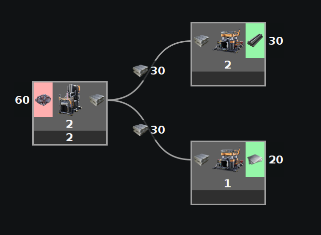
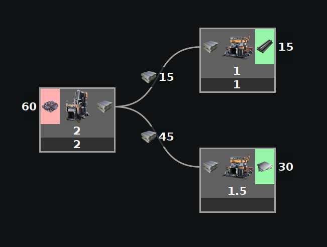
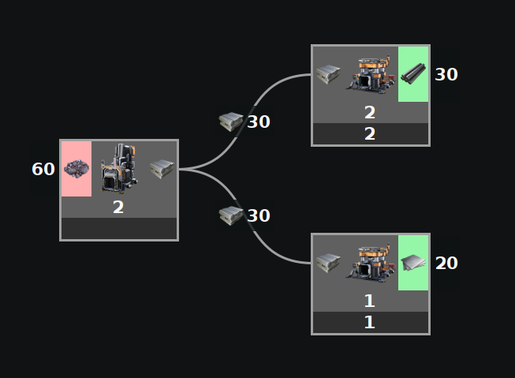
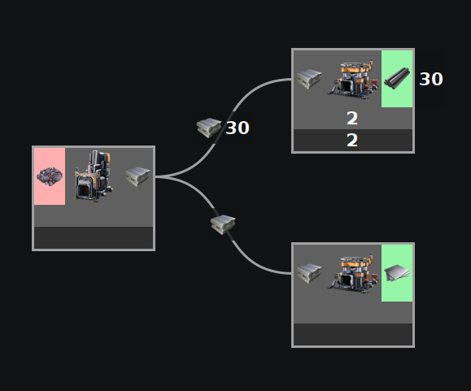
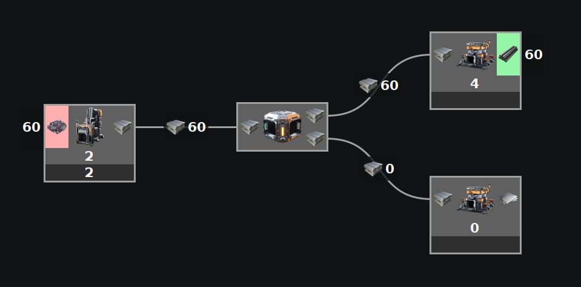
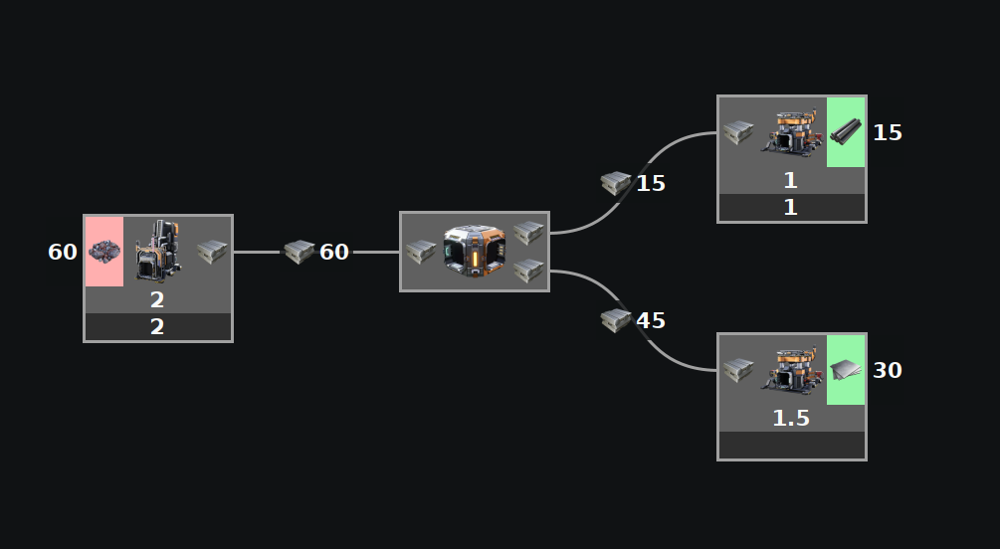

This is the default calculator.
This takes into account the fact that splitters and mergers prefer to split/merge as evenly as possible. It also takes into account priority splitters and mergers.
The values entered in this mode are limits.
This mode most accurately models what happens in Satisfactory.
This can be quite slow on larger builds. Tips to help the full calculator run faster can be found here.
Examples

When no sides of a split are backed up, the splitter splits evenly. All that is needed with the Full calculator is inputing the initial values.

When one side is limited, the backup will push the parts to the other side.

Limits can be placed anywhere you want. Here the limits are placed on the outputs instead of the input.

In this example, not enough limits were entered to be able to define everything.

When using a priority splitter, the parts will always try to go to the top priority first.

When using a priority splitter, the parts will only overflow to the bottom priority if the top priority is full.